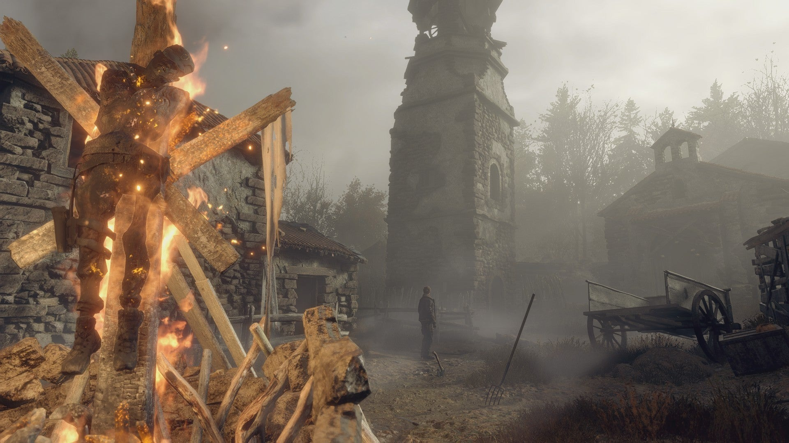
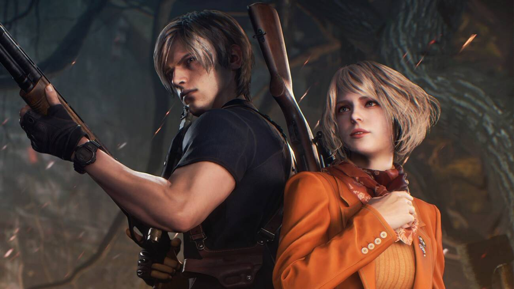
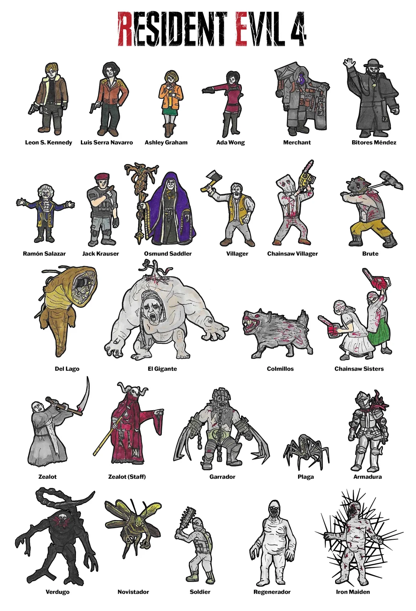

Visão geral

Resident Evil 4 marcou uma revolução na franquia e nos jogos de ação em terceira pessoa. Agora com câmera sobre o ombro, o jogo acompanha Leon S. Kennedy em uma missão para resgatar a filha do presidente dos EUA, sequestrada por um culto misterioso em uma região rural da Europa.
Em vez de zumbis tradicionais, o jogador enfrenta os Ganados, humanos infectados por um parasita chamado Las Plagas, que são mais rápidos, organizados e perigosos.
Gameplay e mecânicas
RE4 trouxe diversas inovações marcantes:
- Câmera sobre o ombro, focada no personagem;
- Sistema de mira mais preciso, com foco em pontos fracos dos inimigos;
- Inventário em forma de maleta, incentivando organização estratégica;
- Presença do Mercador, um NPC que vende armas, upgrades e itens;
- QTEs (eventos de botão rápido) em cenas de ação cinematográficas.
O ritmo é mais voltado para ação, mas ainda há momentos de tensão, gerenciamento de recursos e exploração de ambientes variados.
História e atmosfera
A narrativa leva Leon por vilarejos, castelos e laboratórios, enfrentando líderes do culto e criaturas grotescas. Personagens como Ashley Graham, Ada Wong e Luis Sera contribuem para o desenvolvimento da trama.
A atmosfera mistura horror, ação e momentos de humor discreto, criando uma identidade muito própria dentro da franquia.
Análise
Resident Evil 4 é frequentemente citado como um dos jogos mais influentes da história, definindo o padrão dos shooters em terceira pessoa por anos.
Seu level design, variedade de situações, chefes memoráveis e mecânicas funcionam de forma tão redonda que o jogo continua sendo relançado em diversas plataformas até hoje.
Vendas aproximadas: mais de 30 milhões de cópias somando todas as versões.
Impacto: redefiniu o gênero de ação em terceira pessoa e reinventou a franquia.
Curiosidades
- RE4 teve vários protótipos descartados antes da versão final.
- A famosa frase “What are you buying?” do Mercador virou meme entre os fãs.
- Recebeu um remake em 2023, com gráficos e jogabilidade modernizados.
- Originalmente foi desenvolvido como exclusivo do Nintendo GameCube.
Galeria de imagens


